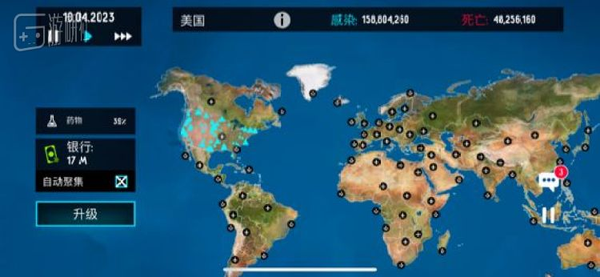

美国两百年镜鉴：如何把灾疫挡在第一道防线之外
原文链接 备份链接 在美国过去200多年抗击传染病的经验中，最重要的一条也许是：学会利用“坏消息”去纠正问题，并把它变成习惯和制度 ***********金焱 | 文*********** …
每周98，疫情解药带回家？
大家都知道，《瘟疫公司》前段时间在国内下架了，具体的来龙去脉我们之前已经讲过，这里就不再赘述。
当时你可能在社交平台上看过这样的玩笑：《瘟疫公司》想回来，估计得把玩法一百八十度翻转成《抗疫公司》，研究解药打败病毒才行。
而你要意识到，世界上的人分成两种，没商业头脑的和有商业头脑的。前者拿这句话当玩笑看的时候，后者早就开始了行动。
于是，现在一款叫作《疫情解药》的游戏进入人们的视线。
无论是从美术还是内容上，很容易就看得出来它基本就是一部大范围“借鉴”《瘟疫公司》的反转作品。《瘟疫公司》里玩家要传播病毒、升级病毒，那《疫情解药》里就改成研究解药、拯救世界。
当然，在这之前，你得先交98块钱，这是一个星期的订阅费用（现在打折了，只要28一周哦）。交了钱，你就能……成为更厉害的救世主！不交钱的话倒也没什么，就是那个“稍后提醒”的按钮藏在犄角旮旯里，自己慢慢找吧。
值得一提的是，《瘟疫公司》中不少人在意的“地图问题”，在这款“精神续作”中得到了修复——但仅限中国地区，其他地方依然进行了忠实的省略，甚至连阿拉斯加都划给了加拿大。
不过和《瘟疫公司》不同，在《疫情解药》里你并没有选择病毒爆发在哪的权利，只能边看着病毒感染并杀死更多人，边坐等地图上冒出钞票的图标，把钱汇进你的银行户头。
游戏中的资源不再是DNA点数，而是货真价实，以百万为单位的现金，而这些钱的用途，就是点击屏幕上那个硕大的“升级”，通过各种途径研发解药。
由于显而易见的点对点式“借鉴”，这款游戏在把“病毒变异”反转成“研发解药”的过程中出现了一些逻辑上的问题。比如在照搬传播途径这一栏的时候，复刻版的空气传播选项里，出现了“病原体不能在空气中存活很长时间”这种尴尬的说法——显然，这是文案连编都懒得编了。
看到这，您应该发现了：《疫情解药》这款游戏，做得实在不怎么样。
而在这种低劣的制作水平下，这款游戏甚至产生了一些很黑色幽默的现象。
举个例子，《疫情解药》里的病毒似乎极有政治觉悟，绝不出国传染，地图上《瘟疫公司》一样来回穿梭的飞机和轮船其实只是摆设。我尝试的那一局里，病毒默认爆发在美国，就这样直到2023年，美国四分之一的人都已经死掉，全世界其他地方仍然没有一例感染。

《瘟疫公司》里表示疫情的红色，变成了一堆蓝色的三角形
更神奇的是，都到这份儿上了，全人类依然保持着极高水平的克制，并且对美洲大陆上的惨剧一直袖手旁观，这其中甚至包括美国人自己。只有美国的国土上每隔几天蹦出来一个现金图标，点一下，加一百万块钱……而想研发一下疫苗，少说也得花三四千万。
每天死个几万人，还就给这点儿拨款，美国人真沉得住气啊……
顺带一提，《疫情解药》也还原了国家特征的设定（虽然没看出来有什么用），比如中国就是“温和的 湿润气候 富有 城市化 国家”，而美国……则是个“不富有 城市化 国家”。
游戏如此神奇，我就还顺便查了一下它的神奇开发者，Action Portal。
他们在App Store上一共发布了三款作品，都是中文版，但也都无人问津且评价不佳。从《疫情解药》的说明中，可以顺藤摸瓜地找到它的官网，以及注册地址——俄罗斯的新西伯利亚市。
通过俄罗斯版的“天眼查”Rusprofile，可以很轻松地发现一个事实：
这家公司既没有雇员，也几乎没有营业额。而且这个Action Portal，和其他55家俄罗斯公司，统统属于同一个叫作诺维科夫的人，这些公司的注册地址，也全都是同一栋楼的不同房间。
换句话讲，这不过是一个境外的壳而已。
目前，《疫情解药》在App Store上的评分已经跌到了1.2分，从游戏质量来看，批评的内容也可想而知。
但和许多人指责的不同，《疫情解药》并不能完全算是《瘟疫公司》被下架后赶出来蹭红利的作品。它其实二月初就已经上架了，这次之所以会引起大家的关注，主要是因为有人把它发到了社交媒体上，引起了一波共鸣。
不过……如果《瘟疫公司》还在的话，谁还会来玩它呢？
原文链接 备份链接 在美国过去200多年抗击传染病的经验中，最重要的一条也许是：学会利用“坏消息”去纠正问题，并把它变成习惯和制度 ***********金焱 | 文*********** …
原文链接 备份链接 目前包括中国大陆在内，全球已经有41个国家和地区出现了疫情，其中，韩国是中国大陆之外疫情蔓延最快的国家。 尽管如此，世卫组织不希望在“没有谨慎和清晰地分析事实情况之前”仓促宣布疫情为全球“大流行病” 文 |《财经》特派 …
原文链接 备份链接 洗手有多重要？ 来复习一下标准答案：和戴口罩一样重要，有时可能还更重要。 经历了这么多天密集轰炸式卫生常识再教育，平时再懒的人，现在在洗手这件事上都勤快得不可思议，恨不得把手洗秃噜皮。 如果想加深自我教育，以沉浸式体验 …
原文链接 备份链接 由于缺乏疫苗等应对措施和其他未知因素的存在，专家们仍认为疫情对美国构成风险 *文 | 《巴伦》撰稿人列什玛·卡帕迪亚* *编辑 | 郭力群* 虽然投资者对于新冠病毒疫情造成的后果的担忧正在减弱，但一些顶尖医学专家警告 …
原文链接 备份链接 新冠疫情之下，一些 “神” 操作格外醒目。 大理截获重庆口罩，青岛沈阳互扣口罩；个别地区排挤湖北人、歧视武汉人；村子在挖路断交，小区禁止租户返回，无锡劝返外地人；四川专家误读“粪口传播”，中科院研究员带货双黄连，湖北官 …